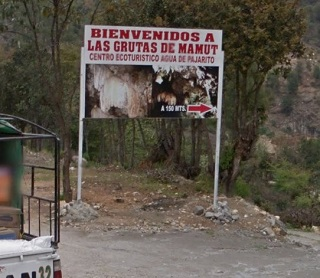
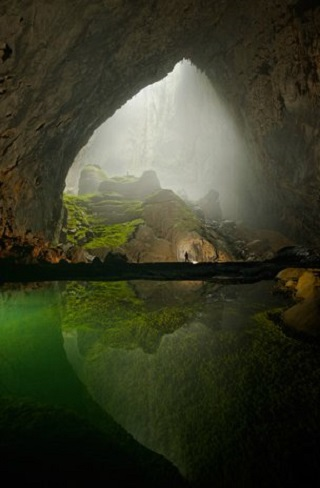
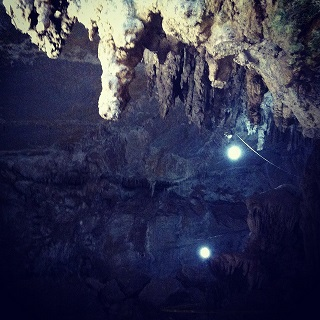
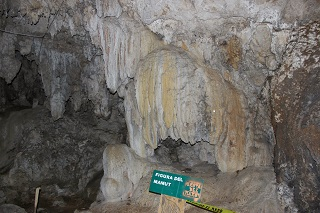
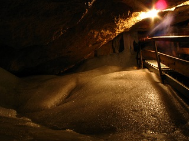

A tan solo 15 min de San Cristóbal de Las casa se encuentran las grutas del mamut, en la Localidad Agua de pajarito, esta grutas te invitan a disfrutar de la naturaleza, visitar grandes cavernas con ventanas de luz que se creen fueron creadas por mamuts, las grutas cuentan con grandes y diversas formas de estalactitas y estalagmitas, servicios de palapas, baños, guías, restaurante y un amplio estacionamiento aparte de ofrecer parte de su cultura y sus tradiciones.
Ubicado en el PARQUE ECOTURÍSTICO AGUA DE PAJARITO, en La localidad de Agua de Pajarito está situado en el Municipio de San Cristóbal de las Casas.
Saliendo de la ciudad de San Cristóbal de las Casas, exactamente del estacionamiento de la plaza de la paz, tomar la carretera San Cristóbal de las casa – Tenejapa.
Pasando por la calle Profa. María Adelina Flore seguida por la calle Nicolás Ruíz, girar a la izquierda hasta ir con dirección a la garita, siguiendo la carretera y girando levemente segun el sentido de está.
Continue manejando por la carretera hasta pasar el arcotete y justo a menos de un kilometro después de este encontrará un letro que le indicará que ha llegado a las grutas del mamut y tomará el pequeño camino de terracería situado en ese mismo lugar para llegar hasta las grutas.
En el lugar, se pueden practicar todo tipo de actividades de esparcimiento como:
* Ir a balnearios,
* Cuenta con baños/nadar,
* Se pueden realizar caminatas/expediciones,
* Cicloturismo,
* Circuitos/expediciones,
* Tomar fotografía,
* Juegos,
* Observación de flora y fauna,
* Paseos a caballo,
* Ir de picnic;
Así como actividades deportivas: cabalgatas, futbol, rapel, senderismo, tenis, tiroleza, todo terreno entre otros.





posicione el mouse sobre las imágenes